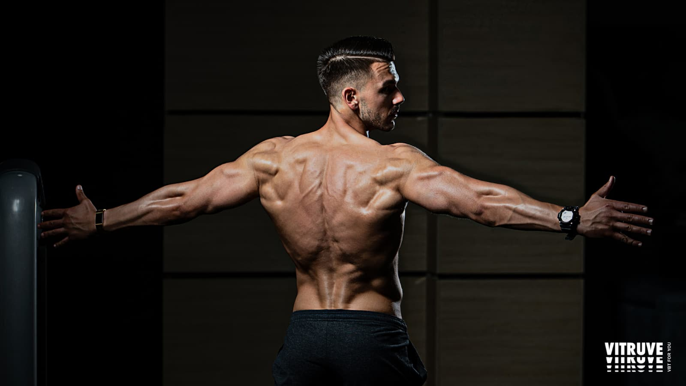
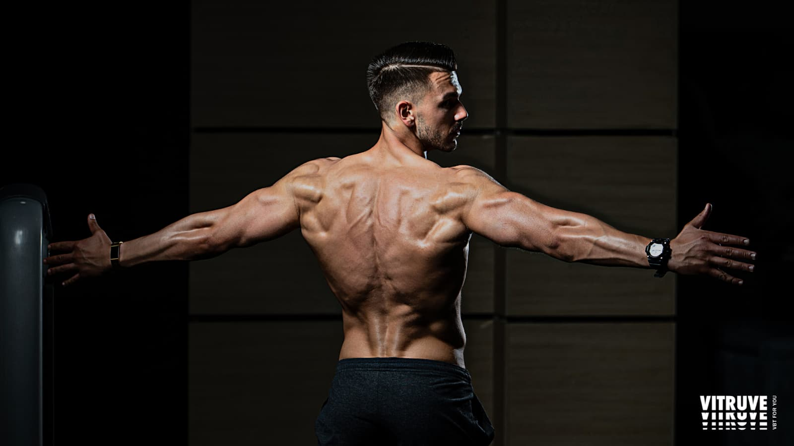

At Turkz Flex Zone, we focus on helping you achieve your fitness goals through structured and effective workout routines. Our training programs combine strength training, resistance exercises, and bodyweight movements to improve muscle growth, endurance, and overall fitness. Each routine is designed to cater to different fitness levels, ensuring that both beginners and advanced athletes can find a plan that works for them.
We provide step-by-step workout guides, instructional videos, and expert tips to help you perform exercises with proper form and maximize results. Whether you're aiming to build muscle, burn fat, or enhance athletic performance, our workout plans will keep you motivated and on track. Stay committed, push your limits, and transform your body with Turkz Flex Zone! 💪🔥
 
